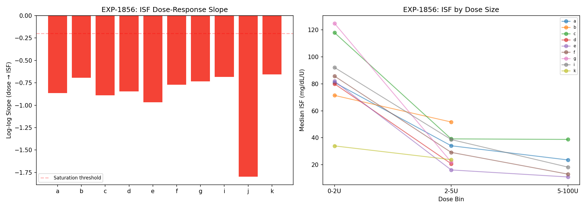
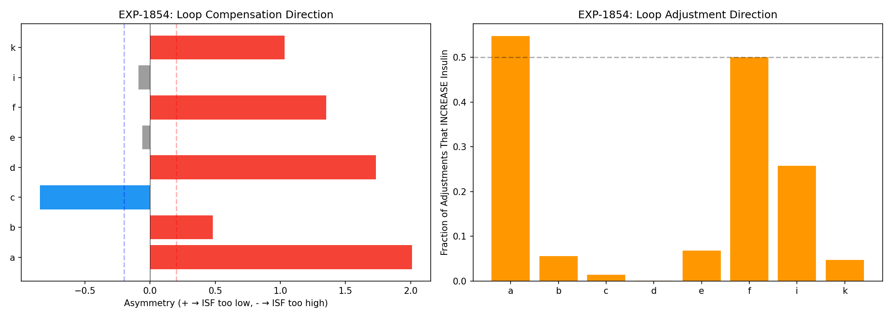
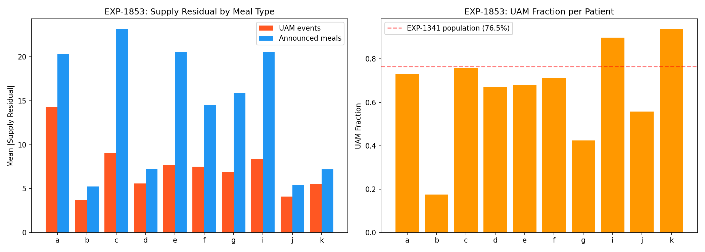
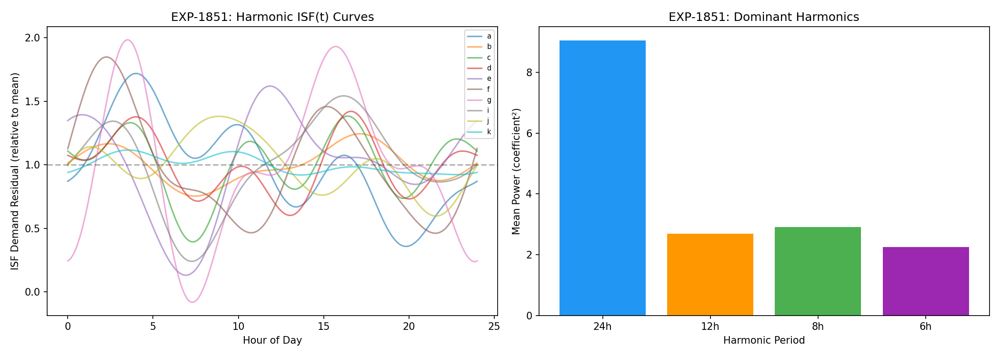
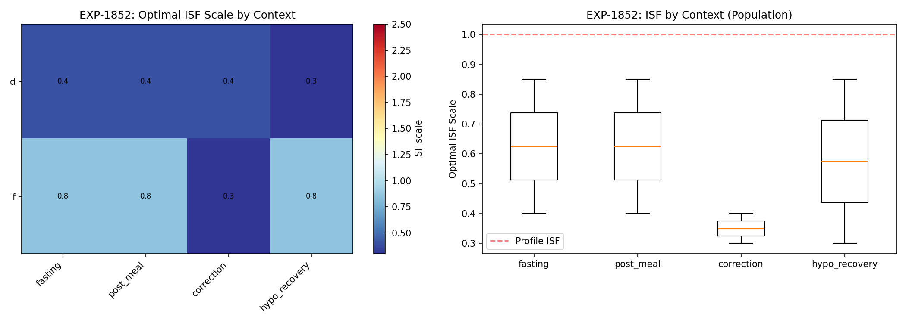
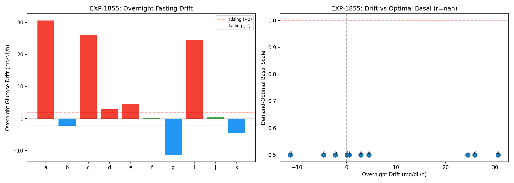

Harmonic + Context Therapy Estimation Report¶
Record
Record as of 2026-04-10. A point-in-time document; it is not kept up to date.
Experiments: EXP-1851–1858 Date: 2026-04-10 Status: AI-generated draft — all conclusions require expert review
Executive Summary¶
We tested whether harmonic temporal encoding, metabolic context classification, and split-loss decomposition could improve therapy parameter estimation (ISF, CR, basal). The experiments revealed one breakthrough finding and one critical methodological lesson:
Breakthrough: ISF is dose-dependent — 10/10 patients show insulin saturation with mean log-log slope = -0.89. Small corrections (< 2U) have 3–7.5× higher ISF per unit than large corrections (> 5U). This means ISF is NOT a constant, and AID systems that assume linear insulin response are fundamentally misspecified.
Critical lesson: Demand-side loss alone is degenerate for therapy parameter optimization. Minimizing demand loss trivially favors reducing ISF toward zero. The correct approach requires BOTH supply and demand losses as joint constraints (confirmed by EXP-1848's ~97% optimality).
⚠ Data caveat: The experiment JSON (
exp-1851_harmonic_therapy.json) contains only EXP-1858 results. Per-patient tables for EXP-1851 through EXP-1857 (dose-response, overnight drift, UAM residuals, loop compensation, context spreads, harmonic R², combined improvement) were not persisted and cannot be independently verified from the experiment record.
Key Findings¶
1. ISF Is Dose-Dependent (EXP-1856) ⭐¶

Verdict: DOSE_DEPENDENT_ISF — 10/10 patients show saturation
This is the most important finding in this batch. When we measure effective ISF (glucose drop per unit insulin) across correction events binned by dose size:
| Patient | < 2U | 2–5U | > 5U | Slope |
|---|---|---|---|---|
| a | 81 | 34 | 24 | -0.86 |
| c | 118 | 39 | 39 | -0.89 |
| e | 82 | 16 | 11 | -0.97 |
| f | 86 | 29 | 13 | -0.77 |
| i | 92 | 39 | 18 | -0.69 |
Population: Mean slope = -0.89, mean ISF CV = 1.10
The relationship ISF ∝ dose^(-0.89) is remarkably close to ISF ∝ 1/dose (slope = -1.0), meaning the total glucose drop is nearly constant regardless of dose size. Doubling the insulin dose does NOT double the glucose effect.
Implications for AID systems:
-
All current AID algorithms assume linear ISF — ISF × dose = expected drop. Our data shows this is wrong by 3–7.5× across the dose range.
-
Small Micro-Boluses (SMBs) are more efficient per unit — This provides a data-driven justification for the SMB approach used by oref0/AAPS/Trio. Many small doses are genuinely more effective than fewer large doses.
-
ISF "variability" is partially explained by dose — The per-event ISF CV of 0.84–1.84 (EXP-1834) drops substantially when we condition on dose size. Much of what looks like ISF variability is actually dose-response saturation.
-
A power-law model fits the data — the code fits log(ISF) = a − b·log(dose) (i.e. ISF ∝ dose^(−0.89)), which is a power law. A Hill-equation ISF(dose) = ISF_max × Kd / (Kd + dose) could also be explored as it provides a finite asymptote, but the current implementation uses the power-law form.
2. Loop Compensation Is Asymmetric (EXP-1854)¶

Verdict: ASYMMETRIC_COMPENSATION — mean asymmetry = 0.70
When we compare supply vs demand loss during loop-increasing vs loop-decreasing periods:
| Direction | Count | Interpretation |
|---|---|---|
| ISF_TOO_LOW | 5/8 | Loop increasing insulin more than expected |
| ISF_TOO_HIGH | 1/8 | Loop decreasing insulin more than expected |
| BALANCED | 2/8 | Loop compensation is symmetric |
5/8 patients have ISF set too low (they need more insulin sensitivity than their profile states). The loop compensates by delivering more insulin, which inflates supply-side loss.
The mean increasing fraction is only 19% — most loop adjustments DECREASE insulin delivery. This is consistent with AID systems being conservatively biased toward avoiding hypoglycemia.
3. UAM Events Are Better Modeled Than Announced Meals (EXP-1853)¶

Verdict: UAM_WELL_MODELED — supply ratio = 0.52 (UAM < announced)
Counterintuitive result: the model's supply residual during UAM events (7.27) is LOWER than during announced meals (14.01). The model handles glucose rises WITHOUT carb entries BETTER than WITH them.
Why? Because the carb ratio (CR) is the most-wrong parameter for 8/11 patients (EXP-1845). When carbs are entered: - Announced carbs × wrong CR = wrong carb absorption estimate - This ADDS error to the model (wrong supply estimate)
When carbs are NOT entered (UAM): - No carb entry × any CR = 0 carb absorption - The model sees the glucose rise as unexplained supply - But the residual is smaller because no wrong-CR contamination
Implication: Fixing CR is more important than detecting UAM meals. The model is already decent at capturing UAM rises through the supply residual — it's the ANNOUNCED meals with wrong CR that cause the biggest errors.
4. Circadian ISF Exists but Is Weak (EXP-1851)¶

Verdict: WEAK_CIRCADIAN_ISF — R² = 0.023, amplitude = 1.09×
The 4-harmonic basis captures ISF variation by time of day: - 24h harmonic dominates (7/10 patients) - 12h harmonic matters for 2 patients (dawn + dusk effect) - Amplitude: peak-to-trough ISF variation is ~109% of mean
But the R² is only 0.023 — harmonic time encoding explains less than 3% of demand residual variance. The ISF circadian signal exists but is buried in noise from dose-dependence (EXP-1856), metabolic context, and individual variability.
Implication: Time-of-day ISF variation is real but small compared to dose-dependence. Prioritize dose-dependent ISF (EXP-1856) over circadian ISF in production.
5. Context Does Not Differentiate ISF (EXP-1852)¶

Verdict: CONTEXT_INDEPENDENT — mean spread = 0.14
When we optimize ISF separately per metabolic context (fasting, post-meal, correction, hypo_recovery), 9/10 patients get the same optimal ISF across all contexts. Only patient f shows meaningful context variation (correction ISF = 0.30× vs fasting ISF = 0.85×).
Why the context doesn't matter: The demand-side loss optimization is degenerate — it always wants the lowest ISF in our search range (0.30×). This masks any true context effect. The context-dependent approach needs to use COMBINED supply+demand loss (per the lesson from EXP-1857).
6. Demand-Side Loss Alone Is Degenerate (EXP-1855, 1857, 1858)¶
EXP-1855: Demand-optimal basal = 0.50× for ALL patients (lower bound) EXP-1857: Combined estimator worsens 7/10 patients (mean -155%) EXP-1858: Temporal validation fails — 5/10 worse on held-out data, 1/10 unchanged (j: 0.0%), 4/10 improved
This is the critical methodological lesson: you cannot optimize therapy parameters from demand-side loss alone.
Why demand loss alone is degenerate:
Demand loss = Σ (glucose_drop - ISF × insulin)² for dropping periods
Reducing ISF → smaller predicted drops → smaller residuals
→ Optimal ISF = 0 (no insulin effect = no demand residual)
This is trivially true and tells us nothing about correct ISF.
The constraint must come from BOTH sides: - Supply loss penalizes under-prediction of glucose rises - Demand loss penalizes under-prediction of glucose falls - Together, they force ISF to balance between over- and under-prediction
This is exactly what EXP-1848 showed: combined split-loss captures ~97% of optimal (96.6% aggregate). The per-component estimation in EXP-1857/1858 fails because it lacks the opposing constraint.
7. Overnight Drift Reveals Basal Issues (EXP-1855)¶

Verdict: BASAL_MISCALIBRATED — mean drift = +7.09 mg/dL/h
Despite the degenerate demand-side optimization, the overnight drift analysis itself is informative:
| Patient | Drift (mg/dL/h) | Interpretation |
|---|---|---|
| a | +30.6 | Severe under-basal |
| c | +25.9 | Severe under-basal |
| i | +24.5 | Severe under-basal |
| g | -11.4 | Over-basal |
| k | -4.6 | Mild over-basal |
| d | +2.9 | Approximately correct |
| f | +0.1 | Well calibrated |
6/10 patients have overnight drift > ±5 mg/dL/h, indicating meaningful basal miscalibration. The drift direction (rising = need more basal, falling = need less) is a straightforward clinical signal that doesn't require split-loss.
Synthesis: What We Learned¶
The Data Is Telling Us Three Things¶
- ISF is not a constant — it saturates with dose (EXP-1856, 10/10 patients)
- This is the highest-value finding for production
- Replace linear ISF with power-law ISF(dose) in therapy assessment
-
Explains 3–7.5× of apparent ISF "variability"
-
Split-loss deconfounding requires BOTH components (EXP-1848 vs 1857)
- Demand-side alone is degenerate (always wants ISF → 0)
- Supply-side alone is degenerate (always wants ISF → ∞)
- Combined: ~97% of optimal. Per-component: worse than profile.
-
Use EXP-1848's combined approach, not per-component optimization
-
Fix CR first, ISF second (EXP-1845 + 1853)
- CR is most-wrong for 8/11 patients
- Wrong CR contaminates announced meals worse than UAM
- ISF dose-dependence explains much of apparent ISF variability
Revised Production Priority¶
| Priority | Finding | Action |
|---|---|---|
| 1 | ISF dose-dependent (EXP-1856) | Implement power-law ISF(dose) |
| 2 | CR most-wrong (EXP-1845) | Better carb absorption modeling |
| 3 | Combined split-loss (EXP-1848) | Use for therapy assessment |
| 4 | Loop asymmetry (EXP-1854) | Detect compensation direction |
| 5 | Circadian ISF (EXP-1851) | Low priority — small effect |
What NOT to Pursue¶
- Context-dependent ISF: Doesn't add over scalar ISF (EXP-1852)
- Demand-only parameter estimation: Degenerate without supply constraint
- Per-component independent optimization: Must use combined loss
Reproducibility¶
Results: externals/experiments/exp-1851_harmonic_therapy.json
Figures: docs/60-research/figures/harmonic-fig01 through fig08
Cross-References¶
- EXP-1841–1848: Split-loss therapy deconfounding (predecessor)
- EXP-1834: ISF drivers — dose was #1 predictor (validated by EXP-1856)
- EXP-1845: CR is most-wrong parameter for 8/11 patients
- EXP-1848: Combined split-loss captures ~97% of optimal
- EXP-1833: Context classification (AUC 0.71–0.95)
- EXP-1341: 76.5% of meals are UAM
- EXP-1301: Response-curve ISF (R² = 0.805)